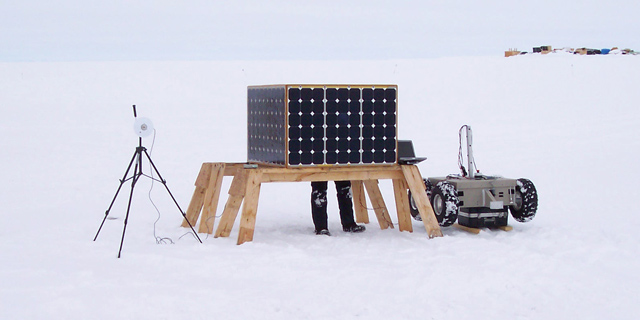

| |<< |< August 1, 2005 >| >>| | |
|
What a fine day. The sky, very late in the day, has finally opened up for a brief period to give us our first clear view of the sun in days. A stark comparison to this morning, when everything about us was bathed in a softening shroud of fog. Cloudy skies, white snow, and fog all about make for a rather surreal appearance. If we are lucky, however, we may be able to coax the sun into sticking around for a few days. This evening marks T-7 days for us. We were informed this morning that our flight back to Kangerlussuaq will be on the 10th, next Wednesday. What's more, we will promptly be turned around and put onto another flight the following morning, bound for New York, rather than on the 13th as scheduled. It is a bit of a dissappointment to me, since I was hoping to get a few days to hike in the hills around Kangerlussuaq. Finally, this flight back to the States will be a "cold cabin" flight, which means that it will be full of ice cores that need to be preserved at cold temperatures. So, we'll be huddled in sleeping bags for the whole ride back. But, getting back to the T-7 days bit - it means that we are about halfway through our time here. We've accomplished a fair bit, and today was perhaps our most successful thus far in terms of milestones. We started off the day by having the robot drive a course on its own. From the front door of the garage where we store and work on the robot, out past the fuel depot, and then following the loop used by the LC-130s to turn around, and out onto the runway. All in all, I estimate it was 2-3 km. The robot (under our close watch, naturally) flawlessly homed in on one waypoint after the next, transitioning between them easily, and making great headway. Having (re)proven the robot's ability to drive itself around using GPS, we turned our attention to the last (and perhaps largest) hurdle: the solar power system. [I say reproven, because Goetz and Toni managed to do the same task this past winter on Lake Mascoma]. The difficulty with this power system, as opposed to a residential system, is that it has a number of panels, all operating simultaneously and under different conditions of light and temperature. As the robot drives around, it will pitch and tilt over obstacles, which causes the insolation on each panel to change rapidly. We weren't going to try all of that at once, however, not yet. Instead, we focused on the more modest task today of extracting power from a single panel. With the robot up on a box and spinning its wheels to create a modest load, the power system controller managed (after some encouragement) to do just that. Bathed in weak diffuse light from a cloudly sky and lowering sun, the amount of available power wasn't tremendous, but enough for the job. It is a small milestone compared to the autonomous driving earlier today, but an encouraging result and harbinger of things yet to come. Now if only the sun will stick around... --Alex Streeter |
|
|  | |
| Our setup for testing the solar power system today. The robot is on a box so that it can spin its wheels and create a moderate load, without actually going anywhere. The panel box is set off to one side, so that we still can access the electronics inside the chassis. The thing on the tripod that looks like a giant eye is actually a pyronometer used for measuring the intensity of sunlight. Today, due to the heavily cloudy skies, it wasn't measuring much. |
|
 |
|
| Horseshoes after dinner. |
|
| |<< |< August 1, 2005 >| >>| |
| [Main] | [Mission] | [Design] | [Science] | [Papers] | [Pictures] | [Team] |
|
Last Updated on 10/20/2005 by Streeter
Site © Thayer School of Engineering, Dartmouth College, Hanover, N.H. |